umum-1.webp umum
· hal 1 · 426×273 · 13.4 KB
umum-2.webp umum
· hal 1 · 600×305 · 11.9 KB
umum-3.webp umum
· hal 1 · 177×284 · 7.6 KB
umum-4.webp umum
· hal 1 · 358×463 · 18.1 KB
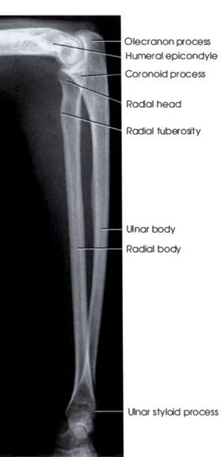
umum-5.webp umum
· hal 3 · 279×577 · 10.5 KB
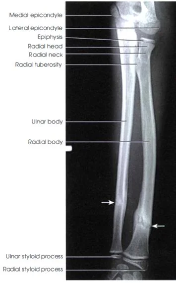
umum-6.webp umum
· hal 3 · 355×571 · 15.6 KB
301-3B — Elbow Joint (elbow · 6 gambar)
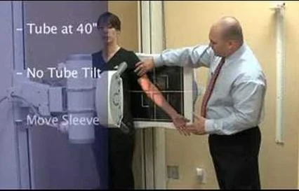
umum-1.webp umum
· hal 1 · 426×273 · 13.4 KB
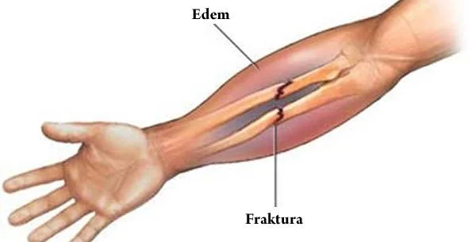
umum-2.webp umum
· hal 1 · 600×305 · 11.9 KB
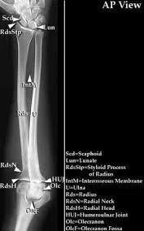
umum-3.webp umum
· hal 1 · 177×284 · 7.7 KB
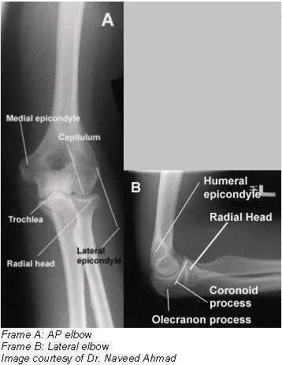
umum-4.webp umum
· hal 1 · 358×463 · 18.1 KB
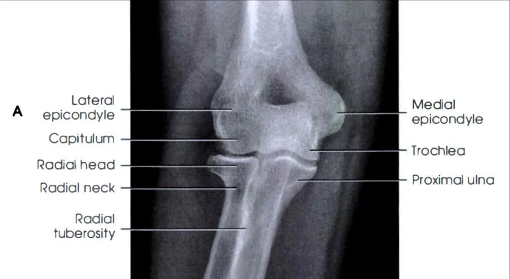
umum-5.webp umum
· hal 3 · 840×459 · 26.4 KB
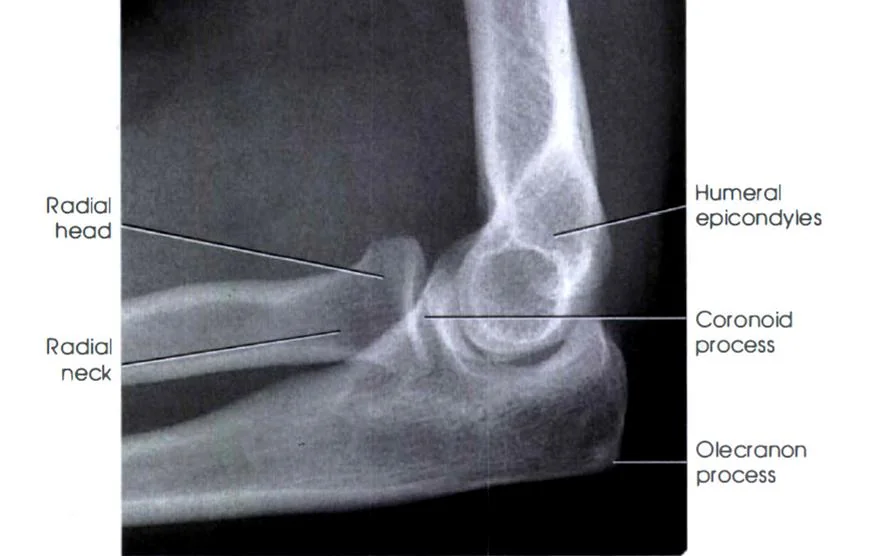
umum-6.webp umum
· hal 3 · 885×556 · 32.1 KB
301-4A — Os Humerus (humerus · 8 gambar)
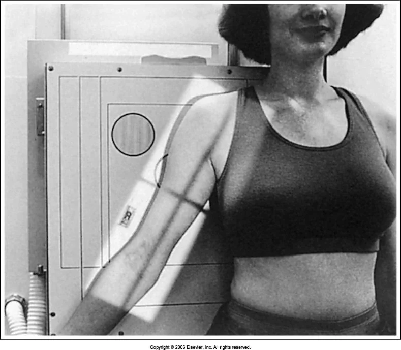
umum-1.webp umum
· hal 1 · 789×689 · 40.6 KB
umum-2.webp umum
· hal 1 · 320×235 · 7.3 KB
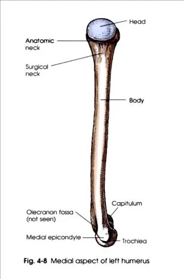
umum-3.webp umum
· hal 3 · 305×461 · 9.7 KB
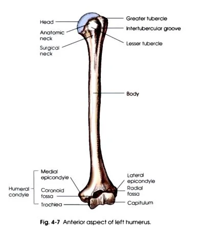
umum-4.webp umum
· hal 3 · 385×461 · 12.7 KB
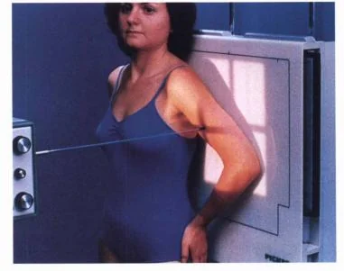
ap-1.webp ap
· hal 5 · 381×301 · 11.0 KB
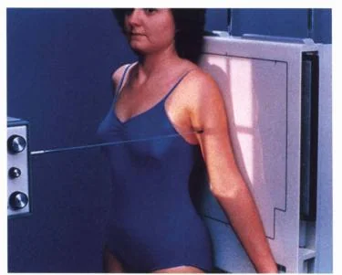
ap-2.webp ap
· hal 5 · 375×301 · 10.1 KB
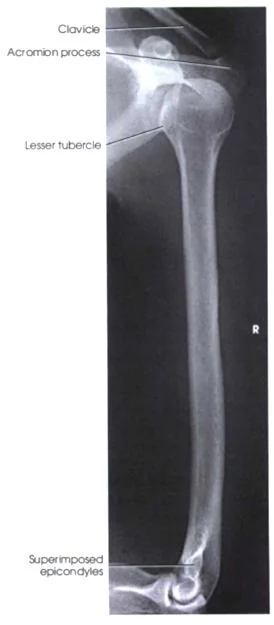
lateral-1.webp lateral
· hal 8 · 274×625 · 9.5 KB
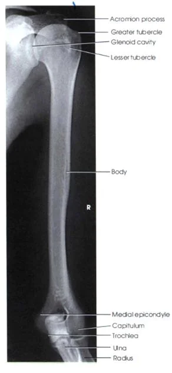
ap-3.webp ap
· hal 8 · 292×633 · 11.7 KB
301-4B — Shoulder Joint (shoulder · 11 gambar)
umum-1.webp umum
· hal 1 · 789×689 · 40.6 KB
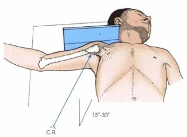
umum-2.webp umum
· hal 1 · 320×235 · 7.3 KB
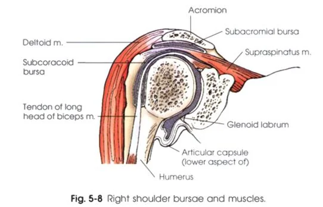
umum-3.webp umum
· hal 3 · 542×348 · 22.1 KB
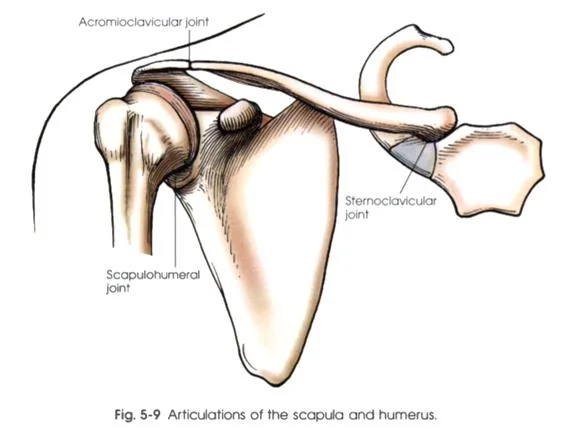
umum-4.webp umum
· hal 3 · 570×434 · 19.4 KB
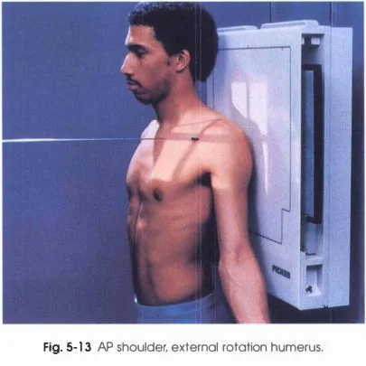
ap-endo-eksorotasi-1.webp ap-endo-eksorotasi
· hal 5 · 405×405 · 15.2 KB
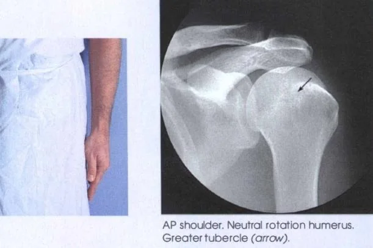
umum-5.webp umum
· hal 8 · 611×407 · 22.0 KB
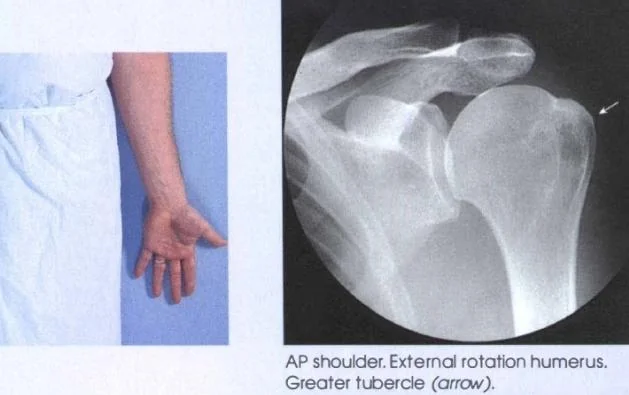
umum-6.webp umum
· hal 8 · 629×395 · 22.8 KB
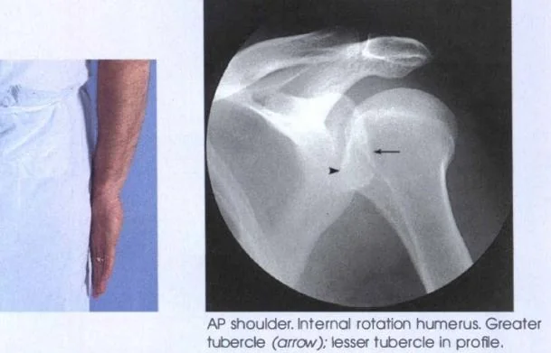
umum-7.webp umum
· hal 8 · 609×391 · 21.0 KB
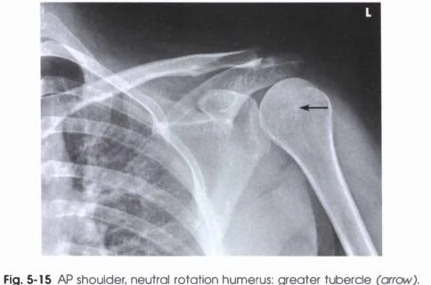
umum-8.webp umum
· hal 9 · 484×320 · 13.5 KB
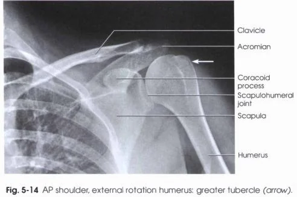
umum-9.webp umum
· hal 9 · 492×327 · 17.4 KB
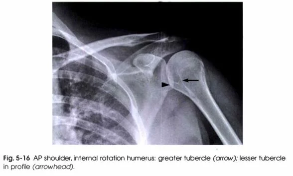
umum-10.webp umum
· hal 9 · 588×355 · 16.0 KB
301-5A — Os Clavicula (clavicula · 6 gambar)
umum-1.webp umum
· hal 1 · 437×370 · 17.5 KB
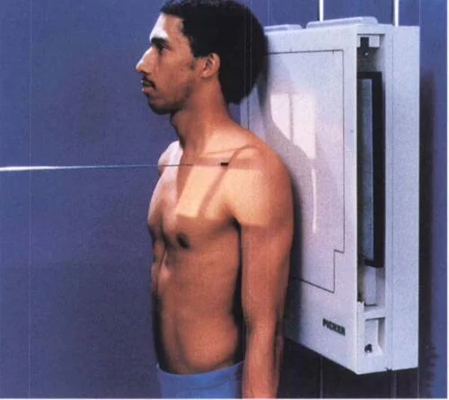
umum-2.webp umum
· hal 1 · 500×445 · 18.5 KB
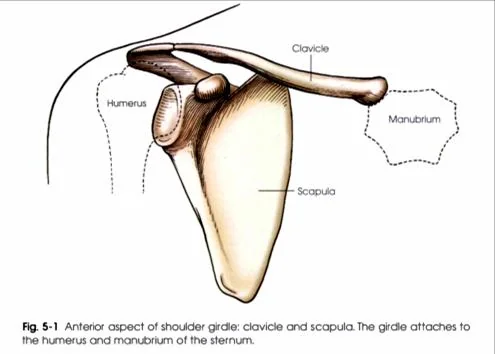
umum-3.webp umum
· hal 3 · 495×354 · 14.1 KB
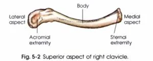
umum-4.webp umum
· hal 3 · 299×119 · 5.0 KB
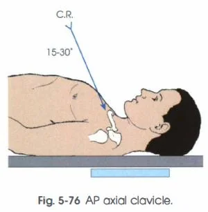
ap-axial-1.webp ap-axial
· hal 5 · 300×307 · 7.0 KB
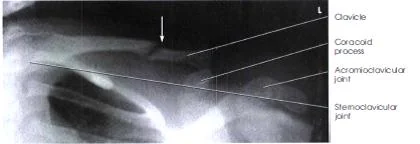
ap-axial-2.webp ap-axial
· hal 6 · 420×144 · 7.4 KB
301-5B — Os Scapula (scapula · 7 gambar)
umum-1.webp umum
· hal 1 · 500×445 · 18.5 KB
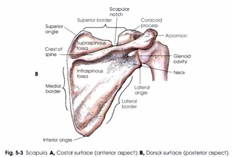
umum-2.webp umum
· hal 3 · 476×320 · 15.6 KB
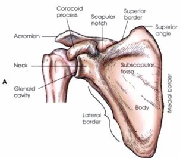
umum-3.webp umum
· hal 3 · 303×265 · 11.6 KB
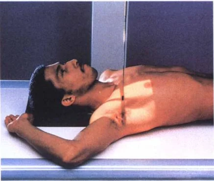
ap-1.webp ap
· hal 4 · 437×370 · 17.5 KB
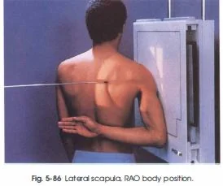
lateral-1.webp lateral
· hal 6 · 274×229 · 7.1 KB
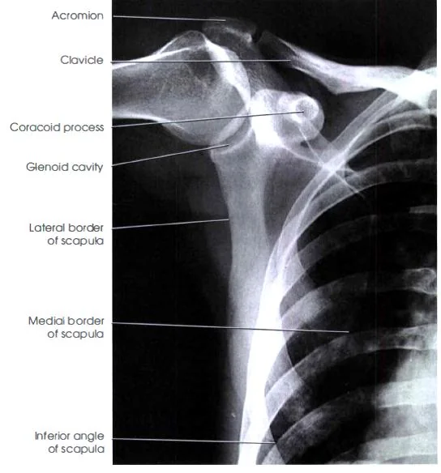
ap-2.webp ap
· hal 8 · 544×584 · 28.9 KB
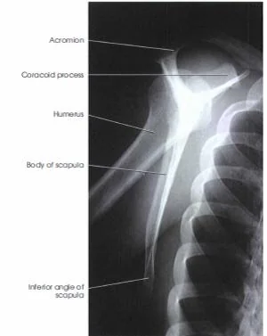
lateral-2.webp lateral
· hal 9 · 300×377 · 8.0 KB
301-6A — Ossa Pedis (pedis · 5 gambar)
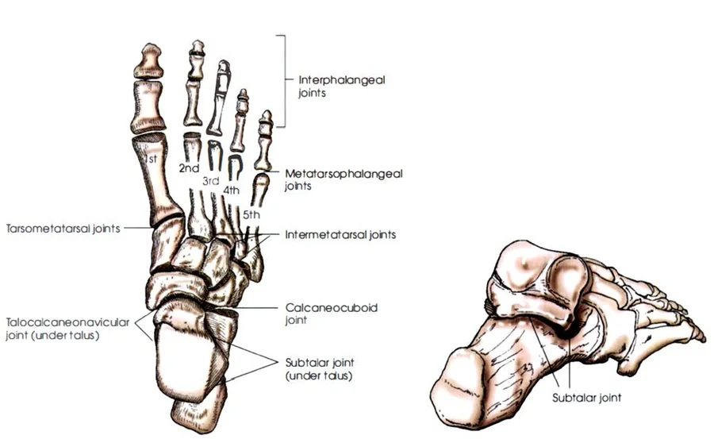
umum-1.webp umum
· hal 3 · 900×553 · 42.7 KB
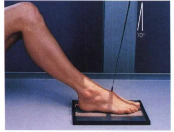
ap-1.webp ap
· hal 4 · 347×264 · 9.0 KB
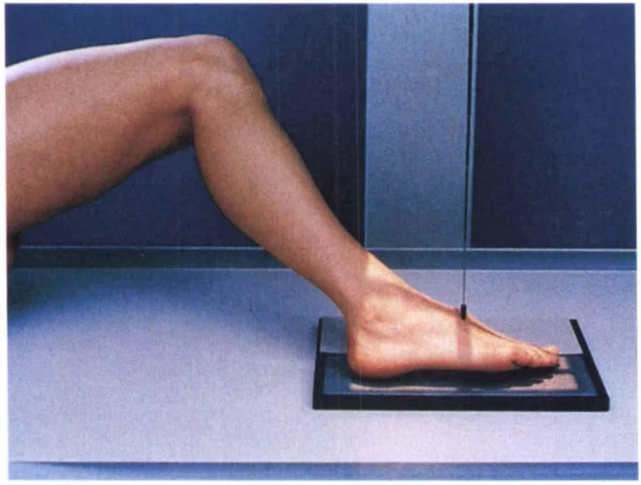
oblik-1.webp oblik
· hal 5 · 900×681 · 44.9 KB
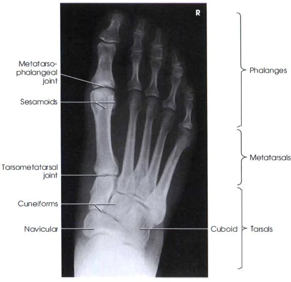
ap-2.webp ap
· hal 8 · 573×556 · 20.5 KB
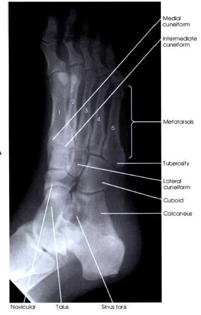
oblik-2.webp oblik
· hal 9 · 396×621 · 19.0 KB
301-6B — Os Calcaneus (calcaneus · 5 gambar)
umum-1.webp umum
· hal 3 · 556×508 · 25.3 KB
ap-axial-1.webp ap-axial
· hal 4 · 460×296 · 10.7 KB
lateral-1.webp lateral
· hal 5 · 339×211 · 5.7 KB
ap-axial-2.webp ap-axial
· hal 7 · 584×442 · 14.4 KB
lateral-2.webp lateral
· hal 8 · 721×440 · 20.0 KB
301-7A — Ankle Joint (ankle · 5 gambar)
umum-1.webp umum
· hal 3 · 240×151 · 6.4 KB
ap-1.webp ap
· hal 5 · 900×607 · 34.2 KB
lateral-1.webp lateral
· hal 5 · 900×632 · 35.5 KB
ap-2.webp ap
· hal 7 · 648×458 · 16.0 KB
lateral-2.webp lateral
· hal 8 · 524×525 · 17.7 KB
301-7B — Os Cruris (cruris · 5 gambar)
umum-1.webp umum
· hal 3 · 900×924 · 28.4 KB
ap-1.webp ap
· hal 5 · 367×239 · 7.7 KB
lateral-1.webp lateral
· hal 6 · 378×251 · 8.2 KB
lateral-2.webp lateral
· hal 7 · 293×507 · 7.5 KB
ap-2.webp ap
· hal 7 · 238×505 · 7.0 KB
301-8A — Knee Joint (knee · 5 gambar)
umum-1.webp umum
· hal 3 · 592×639 · 46.1 KB
ap-1.webp ap
· hal 5 · 362×247 · 9.1 KB
lateral-1.webp lateral
· hal 6 · 251×177 · 5.2 KB
ap-2.webp ap
· hal 6 · 514×468 · 17.2 KB
lateral-2.webp lateral
· hal 7 · 430×418 · 10.7 KB
301-8B — Os Patella (patella · 5 gambar)
umum-1.webp umum
· hal 3 · 218×125 · 4.3 KB
tangential-1.webp tangential
· hal 4 · 744×635 · 35.7 KB
lateral-1.webp lateral
· hal 5 · 367×246 · 9.1 KB
tangential-2.webp tangential
· hal 6 · 461×312 · 9.8 KB
lateral-2.webp lateral
· hal 6 · 165×137 · 1.3 KB
301-9A — Os Femur (femur · 8 gambar)
umum-1.webp umum
· hal 1 · 332×265 · 8.1 KB
umum-2.webp umum
· hal 1 · 524×385 · 15.5 KB
umum-3.webp umum
· hal 3 · 544×413 · 20.2 KB
ap-1.webp ap
· hal 5 · 332×297 · 9.3 KB
lateral-1.webp lateral
· hal 6 · 900×353 · 23.7 KB
lateral-2.webp lateral
· hal 8 · 390×353 · 11.1 KB
umum-4.webp umum
· hal 9 · 378×416 · 7.9 KB
umum-5.webp umum
· hal 10 · 521×454 · 15.1 KB
301-9B — Collum Femur (collum-femur · 8 gambar)
umum-1.webp umum
· hal 1 · 515×447 · 15.5 KB
umum-2.webp umum
· hal 1 · 354×306 · 8.1 KB
umum-3.webp umum
· hal 3 · 562×546 · 32.5 KB
bilateral-frog-leg-1.webp bilateral-frog-leg
· hal 5 · 703×451 · 15.0 KB
unilateral-frog-leg-1.webp unilateral-frog-leg
· hal 6 · 699×782 · 38.9 KB
unilateral-frog-leg-2.webp unilateral-frog-leg
· hal 6 · 422×330 · 11.0 KB
umum-4.webp umum
· hal 8 · 501×351 · 14.0 KB
umum-5.webp umum
· hal 8 · 605×480 · 19.0 KB
301-10A — Hip Joint (hip · 4 gambar)
ap-1.webp ap
· hal 4 · 470×299 · 11.1 KB
ap-2.webp ap
· hal 5 · 502×500 · 16.7 KB
ap-3.webp ap
· hal 5 · 875×440 · 128.8 KB
ap-4.webp ap
· hal 7 · 900×494 · 27.1 KB